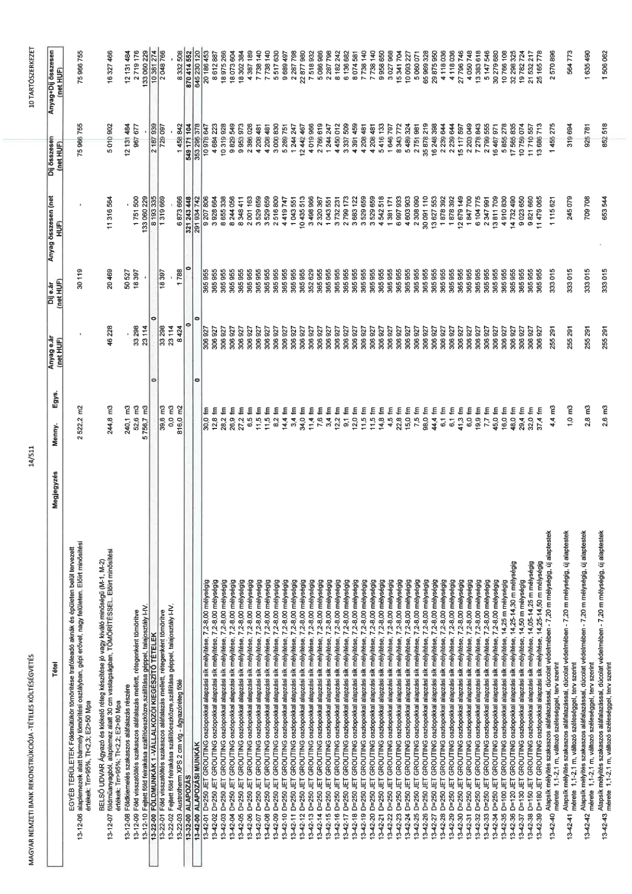

| Tétel | Megjegyzés | Menny. | Egys. | Anyag e.ár (net HUF) | Díj e.ár (net HUF) | Anyag összesen (net HUF) | Díj összesen (net HUF) | Anyag+Díj összesen (net HUF) |
|---|---|---|---|---|---|---|---|---|
| 13-12-00 FÖLDMUNKÁK 1. (Vágott munkaárok) | NaN | NaN | NaN | 0 | 0 | 133 133 935 | 130 923 189 | 264 057 124 |
| 13-12-01 Föld visszatöltése szakaszos aláfalazás mellett, rétegenként tömörítve | NaN | 39,6 | m3 | 33 298 | 18 397 | 1 319 669 | 728 997 | 2 048 666 |
| 13-12-02 Fejtett föld felrakása szállítóeszközre, szállítása géppel, talajosztály I-IV. | NaN | 0,0 | m3 | 23 114 | 0 | 0 | 0 | 0 |
| 13-12-03 Austrotherm XPS 2 cm vtg. ágyazatréteg fölé | NaN | 816,0 | m2 | 8 424 | 1 788 | 6 873 666 | 1 458 842 | 8 332 508 |
| 13-42-00 ALAPOZÁSI MUNKÁK | NaN | NaN | NaN | 0 | 0 | 291 934 742 | 353 295 378 | 645 230 120 |
| 13-42-01 D=250 JET GROUTING oszlopokkal alapzási sík mélyítése, 7,2-8,00 mélységig | NaN | 30,0 | fm | 300 927 | 365 555 | 9 027 806 | 10 976 647 | 20 004 453 |
| 13-42-02 D=250 JET GROUTING oszlopokkal alapzási sík mélyítése, 7,2-8,00 mélységig | NaN | 12,8 | fm | 300 927 | 365 555 | 3 852 664 | 4 684 223 | 8 536 887 |
| 13-42-03 D=250 JET GROUTING oszlopokkal alapzási sík mélyítése, 7,2-8,00 mélységig | NaN | 28,2 | fm | 300 927 | 365 555 | 8 635 338 | 10 311 928 | 18 947 266 |
| 13-42-04 D=250 JET GROUTING oszlopokkal alapzási sík mélyítése, 7,2-8,00 mélységig | NaN | 14,5 | fm | 300 927 | 365 555 | 4 363 440 | 5 296 908 | 9 660 348 |
| 13-42-05 D=250 JET GROUTING oszlopokkal alapzási sík mélyítése, 7,2-8,00 mélységig | NaN | 27,2 | fm | 300 927 | 365 555 | 8 200 411 | 9 953 973 | 18 154 384 |
| 13-42-06 D=250 JET GROUTING oszlopokkal alapzási sík mélyítése, 7,2-8,00 mélységig | NaN | 6,5 | fm | 300 927 | 365 555 | 2 001 163 | 2 380 026 | 4 381 189 |
| 13-42-07 D=250 JET GROUTING oszlopokkal alapzási sík mélyítése, 7,2-8,00 mélységig | NaN | 11,5 | fm | 300 927 | 365 555 | 3 529 659 | 4 201 481 | 7 731 140 |
| 13-42-08 D=250 JET GROUTING oszlopokkal alapzási sík mélyítése, 7,2-8,00 mélységig | NaN | 11,5 | fm | 300 927 | 365 555 | 3 529 659 | 4 201 481 | 7 731 140 |
| 13-42-09 D=250 JET GROUTING oszlopokkal alapzási sík mélyítése, 7,2-8,00 mélységig | NaN | 8,0 | fm | 300 927 | 365 555 | 2 516 830 | 2 924 438 | 5 441 268 |
| 13-42-10 D=250 JET GROUTING oszlopokkal alapzási sík mélyítése, 7,2-8,00 mélységig | NaN | 14,4 | fm | 300 927 | 365 555 | 4 419 747 | 5 268 751 | 9 688 498 |
| 13-42-11 D=250 JET GROUTING oszlopokkal alapzási sík mélyítése, 7,2-8,00 mélységig | NaN | 3,4 | fm | 300 927 | 365 555 | 1 043 551 | 1 244 247 | 2 287 798 |
| 13-42-12 D=250 JET GROUTING oszlopokkal alapzási sík mélyítése, 7,2-8,00 mélységig | NaN | 34,0 | fm | 300 927 | 365 555 | 10 435 513 | 12 447 467 | 22 882 980 |
| 13-42-13 D=250 JET GROUTING oszlopokkal alapzási sík mélyítése, 7,2-8,00 mélységig | NaN | 11,4 | fm | 300 927 | 365 555 | 3 499 098 | 4 165 540 | 7 664 638 |
| 13-42-14 D=250 JET GROUTING oszlopokkal alapzási sík mélyítése, 7,2-8,00 mélységig | NaN | 7,6 | fm | 300 927 | 365 555 | 2 320 367 | 2 788 619 | 5 108 986 |
| 13-42-15 D=250 JET GROUTING oszlopokkal alapzási sík mélyítése, 7,2-8,00 mélységig | NaN | 3,4 | fm | 300 927 | 365 555 | 1 043 551 | 1 244 247 | 2 287 798 |
| 13-42-16 D=250 JET GROUTING oszlopokkal alapzási sík mélyítése, 7,2-8,00 mélységig | NaN | 12,2 | fm | 300 927 | 365 555 | 3 732 231 | 4 450 012 | 8 182 243 |
| 13-42-17 D=250 JET GROUTING oszlopokkal alapzási sík mélyítése, 7,2-8,00 mélységig | NaN | 9,1 | fm | 300 927 | 365 555 | 2 799 173 | 3 331 509 | 6 130 682 |
| 13-42-18 D=250 JET GROUTING oszlopokkal alapzási sík mélyítése, 7,2-8,00 mélységig | NaN | 11,5 | fm | 300 927 | 365 555 | 3 529 659 | 4 201 481 | 7 731 140 |
| 13-42-19 D=250 JET GROUTING oszlopokkal alapzási sík mélyítése, 7,2-8,00 mélységig | NaN | 11,5 | fm | 300 927 | 365 555 | 3 529 659 | 4 201 481 | 7 731 140 |
| 13-42-20 D=250 JET GROUTING oszlopokkal alapzási sík mélyítése, 7,2-8,00 mélységig | NaN | 11,5 | fm | 300 927 | 365 555 | 3 529 659 | 4 201 481 | 7 731 140 |
| 13-42-21 D=250 JET GROUTING oszlopokkal alapzási sík mélyítése, 7,2-8,00 mélységig | NaN | 14,8 | fm | 300 927 | 365 555 | 4 542 518 | 5 416 133 | 9 958 651 |
| 13-42-22 D=250 JET GROUTING oszlopokkal alapzási sík mélyítése, 7,2-8,00 mélységig | NaN | 4,5 | fm | 300 927 | 365 555 | 1 381 511 | 1 646 797 | 3 028 308 |
| 13-42-23 D=250 JET GROUTING oszlopokkal alapzási sík mélyítése, 7,2-8,00 mélységig | NaN | 11,5 | fm | 300 927 | 365 555 | 3 529 659 | 4 201 481 | 7 731 140 |
| 13-42-24 D=250 JET GROUTING oszlopokkal alapzási sík mélyítése, 7,2-8,00 mélységig | NaN | 12,0 | fm | 300 927 | 365 555 | 3 683 110 | 4 386 658 | 8 069 768 |
| 13-42-25 D=250 JET GROUTING oszlopokkal alapzási sík mélyítése, 7,2-8,00 mélységig | NaN | 15,0 | fm | 300 927 | 365 555 | 4 603 903 | 5 483 324 | 10 087 227 |
| 13-42-26 D=250 JET GROUTING oszlopokkal alapzási sík mélyítése, 7,2-8,00 mélységig | NaN | 7,5 | fm | 300 927 | 365 555 | 2 308 090 | 2 751 981 | 5 060 071 |
| 13-42-27 D=250 JET GROUTING oszlopokkal alapzási sík mélyítése, 7,2-8,00 mélységig | NaN | 98,0 | fm | 300 927 | 365 555 | 30 091 110 | 35 872 219 | 65 963 329 |
| 13-42-28 D=250 JET GROUTING oszlopokkal alapzási sík mélyítése, 7,2-8,00 mélységig | NaN | 44,4 | fm | 300 927 | 365 555 | 13 627 553 | 16 248 398 | 29 875 951 |
| 13-42-29 D=250 JET GROUTING oszlopokkal alapzási sík mélyítése, 7,2-8,00 mélységig | NaN | 6,1 | fm | 300 927 | 365 555 | 1 878 392 | 2 239 644 | 4 118 036 |
| 13-42-30 D=250 JET GROUTING oszlopokkal alapzási sík mélyítése, 7,2-8,00 mélységig | NaN | 6,1 | fm | 300 927 | 365 555 | 1 878 392 | 2 239 644 | 4 118 036 |
| 13-42-31 D=250 JET GROUTING oszlopokkal alapzási sík mélyítése, 7,2-8,00 mélységig | NaN | 41,3 | fm | 300 927 | 365 555 | 12 679 149 | 15 117 597 | 27 796 746 |
| 13-42-32 D=250 JET GROUTING oszlopokkal alapzási sík mélyítése, 7,2-8,00 mélységig | NaN | 6,0 | fm | 300 927 | 365 555 | 1 847 700 | 2 203 049 | 4 050 749 |
| 13-42-33 D=250 JET GROUTING oszlopokkal alapzási sík mélyítése, 7,2-8,00 mélységig | NaN | 19,9 | fm | 300 927 | 365 555 | 6 104 299 | 7 279 843 | 13 384 142 |
| 13-42-34 D=250 JET GROUTING oszlopokkal alapzási sík mélyítése, 7,2-8,00 mélységig | NaN | 7,5 | fm | 300 927 | 365 555 | 2 308 090 | 2 751 981 | 5 060 071 |
| 13-42-35 D=250 JET GROUTING oszlopokkal alapzási sík mélyítése, 7,2-8,00 mélységig | NaN | 45,0 | fm | 300 927 | 365 555 | 13 811 709 | 16 467 971 | 30 279 680 |
| 13-42-36 D=250 JET GROUTING oszlopokkal alapzási sík mélyítése, 14,25 m mélységig | NaN | 16,0 | fm | 300 927 | 365 555 | 4 910 830 | 5 855 278 | 10 766 108 |
| 13-42-37 D=120 JET GROUTING oszlopokkal alapzási sík mélyítése, 14,25-14,30 m mélységig | NaN | 48,0 | fm | 300 927 | 365 555 | 14 732 490 | 17 563 835 | 32 296 325 |
| 13-42-38 D=150 JET GROUTING oszlopokkal alapzási sík mélyítése, 14,05-14,10 mélységig | NaN | 32,0 | fm | 300 927 | 365 555 | 9 821 680 | 11 709 224 | 21 530 904 |
| 13-42-39 D=180 JET GROUTING oszlopokkal alapzási sík mélyítése, 14,25-14,50 m mélységig | NaN | 37,4 | fm | 300 927 | 365 555 | 11 479 065 | 13 685 713 | 25 164 778 |
| 13-42-40 Alapsík mélyítés szakaszos aláfalazással, dúcolat védelmében - 7,20 m mélységig, új alaptestek mérete: 1,1-2,1 m, változó szélességgel, terv szerint | NaN | 4,4 | m3 | 255 291 | 333 015 | 1 115 621 | 1 455 275 | 2 570 896 |
| 13-42-41 Alapsík mélyítés szakaszos aláfalazással, dúcolat védelmében - 7,20 m mélységig, új alaptestek mérete: 1,1-2,1 m, változó szélességgel, terv szerint | NaN | 1,0 | m3 | 255 291 | 333 015 | 244 079 | 318 694 | 562 773 |
| 13-42-42 Alapsík mélyítés szakaszos aláfalazással, dúcolat védelmében - 7,20 m mélységig, új alaptestek mérete: 1,1-2,1 m, változó szélességgel, terv szerint | NaN | 2,8 | m3 | 255 291 | 333 015 | 709 708 | 925 781 | 1 635 489 |
| 13-42-43 Alapsík mélyítés szakaszos aláfalazással, dúcolat védelmében - 7,20 m mélységig, új alaptestek mérete: 1,1-2,1 m, változó szélességgel, terv szerint | NaN | 2,6 | m3 | 255 291 | 333 015 | 653 544 | 852 518 | 1 506 062 |
